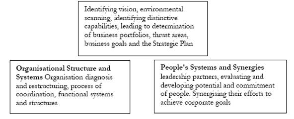

ARM402 :: Lecture 22 :: ROLE OF CONSULTANCY ORGANISATIONS

Learning Objectives
• Consulting Model
• Consulting Matrix
Introduction
In competitive and constantly changing marketing conditions, the production of quality goods at a minimum cost depends solely on the availability and fusion of the latest technical know-how. Modernization for higher productivity also depends on this technical know-how, essential for the healthy growth of the small-scale industry. This technical know-how, however, depends on industrial research, particularly in the small scale Seder, which not only ensures stability -in marketing and profits, but is essential for the very survival of a unit.
A consultant sells advice and counsel for a fee. You not only have the right, but also the responsibility to charge for what you know. Similarly, as a consultant, you must generate enough revenues to underwrite your venture and make it worth your time and effort.
Consulting Model
In the competitive post liberalization environment characterized by rapid technological innovations on new hand, and the prospect of an increasing number of highly experienced international giants entering the domestic market, on the other, the very future of organizations seems rather foggy and endangered. The free market, being ruthless, strictly adheres to the principle of survival of the fittest.
- The vision to provide the and driving duel;
- Appropriate business strategy, based on correct environmental scan (or distinctive advantage or the capacity to develop it soon);
- The appropriate organisational structure (with coordination processes);
- The means and ways of synergizing the efforts of people to achieve the business goals.
Very often one reads these days about the various modem forms of organisational Structures, about business strategies and Identifying vision, environmental scanning, identifying distinctive capabilities, leading to determination of business portfolios, thrust areas, business goals and the Strategic Plan process reengineering. But unless there is an alignment or congruence between all these, i.e., the strategy, the structure and the processes or system, the enterprise just does not benefit.

MHB Counsel’s Consulting Model for Business and Organisational Transformation
Franchising
Have you ever felt like quitting your job and starting on your own? Chances are that you have. But, before examining the option of going into any business, you may want to ask yourself a few questions like whether you are suited for business.
Is there a congenial business opportunity available? Do you have the resources ‘to set’ up a business? If you conclude that business is what you want to do, you could either set up on your own or better still franchise.
Franchising as defined by the International Franchise Association is a continuous relationship in which a franchiser provides a licensed privilege to conduct business in, addition to providing assistance in organizing, training and merchandising, in return for these services the franchiser receives a certain’ amount from the franchisee. To elucidate, a franchiser could be an organisation, which provides the business package while the franchisee, an entity that adopts the business package.
There are three kinds of franchising. Product Franchising, one of the oldest forms of franchising, is when a dealer signs up to sell a product and uses the manufacturers name to do. For instance, vehicle dealers from Maruti or Bajaj are product franchisees.
Trade name Franchising, the second form of franchising, allow a franchisee of use an organization’s name without using a particular product. For example, department or retail stores like Mark & Spencers or Wall Mart.
The most commonly recognised form of franchising is known as Business Format Franchising.
Consultancy Matrix
Management, according to Drucker, is what tradition is used to call a liberal art: ‘liberal’ because it deals with the fundamentals of knowledge, self-knowledge, wisdom, and leadership; ‘art’ because it is practice and application. Managers draw on all the knowledge and insights of the humanities and social sciences - on psychology and philosophy; on economics and history, on the physical sciences and on ethics. But the have to focus this knowledge on effectiveness and results on healing a sick patient, teaching a student, building a bridge, designing and selling a ‘user- friendly’ software programme. For these reasons, management will increasingly coordination, functional systems of people. Synergising their efforts to be the discipline through which the ‘humanities’ will again acquire recognition, impact and MHB Counsel’s Consulting Model for Business and relevance.
Consultancy Cooperation Matrix
| Characteristics | Countries |
|
Strengths |
Developed |
Developing |
Rigour in data handling |
Understanding of dynamics of the local situation and effective |
|
Limitations |
Unfamiliar with local needs |
Inexpensive |
Two Key Roles
In facilitating practicing managers to apply this knowledge,-consultants have two important roles to play:
- Bringing new knowledge to the visible proximity of the practicing manager.
- Acting as ‘information carriers’ on examples of knowledge application – from industry to industry and from - sector to sector.
In short, consultants must be good conceptualizes and communicators. The traditional concept views a consultant as a problem solver and if a problem is posed to him, he will find a solution and. make a report to the client. This is not true, as the resources for solving a problem are invariably available within the organisations. It is the consultants ability to help them use effective tools and techniques: to find their own unique solutions to their own special problems, which is the more important aspect.
Production
As regards production, product research and research in equipment and processes are important.
- Product Research: It is the study of a product’s design, colour brand, etc. which enriches the managements knowledge of the product and helps it to stabilize and. ‘expand which sales. It also evolves the necessary technical know-how of a-product.
- Equipment and Process Research: It is the study of industrial processes and methods, tools and equipment and handling devices to produce a product on a commercial basis at the minimum cost. The development of new methods and mechanisms for increasing the safety processes are fertile fields for this type of study.
With a view to increasing production and employment and stimulating. The development of industrial co-operatives, the small-scale Industries Board” has constituted a working group, which has, laid emphasis on- technical assistance.
Technical Assistance Suggests
- Survey both -economic and technical viabilities to develop small-scale industries;
- Present schemes for the purpose of starting production throughout common service facilities and demonstrations;
- Distribute improved tools arid equipment; and
- Encourage design and research. The emphasis on technical assistance aims at ensuring a rapid growth of small industrial units and making them more efficient rather than protecting them against competition from the organised sector of industry. This activity may be provided in the form of systematic techniques, standardization and improved designs. In other words, technical know-how is the bedlock of the small-scale industry.
Role of the State
The Government of India has been encouraging the growth and development of small industries because of their important contribution to the nation’s economy. The Small Industries Service Institute and the Development rendering valuable assistance and advice to small industrialists because the latter, unlike the big industrialists, cannot afford the financial cost of their own staff of qualified specialists. In order to make this service as complete and comprehensive as possible, a Design Cell was set up in each of the four Regional Institutes at Calcutta, Delhi, Mumbai and Chennai.
The object of setting up of these cells was to study and improve the designs of the products of small industries. In August 1959, in order to improve its services, the Design Cell as centralized in one office at New Delhi because common workshop facilities were available there for purposes of experiment and building with attached workshops consisting of a tool room, a machine shop, a ceramic shop, a ceramic shop and laboratories for chemical and electrical research, and a reading room and library containing many books on industrial designs.
The Industrial Design Cell
Since the setting-up of the Industrial Design Cell, the small-scale industry in India has reportedly made tremendous progress in the field of technology and marketing.
To cope with the constant demand for improvement in the products, the Industrial Design Cell has peen engaged involving new designs, which are suitable for production in the all-scale sector with its limited resources, and mechanical and technical ability.
The principal function of an industrial design is to create product which is functionally perfect and has a ‘strong aesthetic’ appeal, besides being economical and convenient in terms of production. The designer studies the capacity of the manufacturer in order to determine how a product should. be designed. He also considers the total personality of the product, in such a way, that the product acquires a form, which clearly expresses its function.
From the manufacturers point of view, the most important purpose of industrial designing is to render the production of his products economical and convenient. A good design means significant savings in skilled labour, reduction in the number of production operations and better utilization of raw materials. These savings cannot be brought about at the cost of the utility and function of a product; this can best be accomplished when the designer has a good understanding of the machines, workers and the existing production methods of the manufacturer.
Areas of Technical Know-how to Industry
Some of the percepts of modern industrial design and what it tries to accomplish may be summarized here.A modern design should fulfill the practical need of modern life.
It should express the spirit of our times and should also take advantage of new materials and techniques and develop utilitarian products. It should develop the forms, textures and colours that spring from the direct fulfillment f requirements in appropriate materials and techniques and should express the purpose of an object and techniques, and should also indicate as handicraft or simulating a technique which has also not been used. At the same time, it should be simple; its structure evident in its appearance and it should avoid extraneous enrichment.
A modern design should muster the machine for the service of man and should serve as wide a public as wide a public as possible, considering the modest of needs and limited costs on less challenging than the requirements of pomp and luxury.
The industrial design cell has played a vital and significant role in helping the small-scale sector in product designs. Till recently, most of the products manufactured in the small scale sector were either imitations of imported products, irrespective of any
consideration of suitability of Indian conditions, or were functionally bad. The industrial design cell has made efforts to overcome these shortcomings and has helped the small-scale sector to improve its product design and its viability. At present, the industrial design cell specializes in designs for the following industries.
- Cutlery and domestic utensils;
- Domestic electrical appliances;
- Furniture and woodwork;
- Ceramics;
- Leather goods;
- Builders hardware; and
- Plastic goods
| Download this lecture as PDF here |